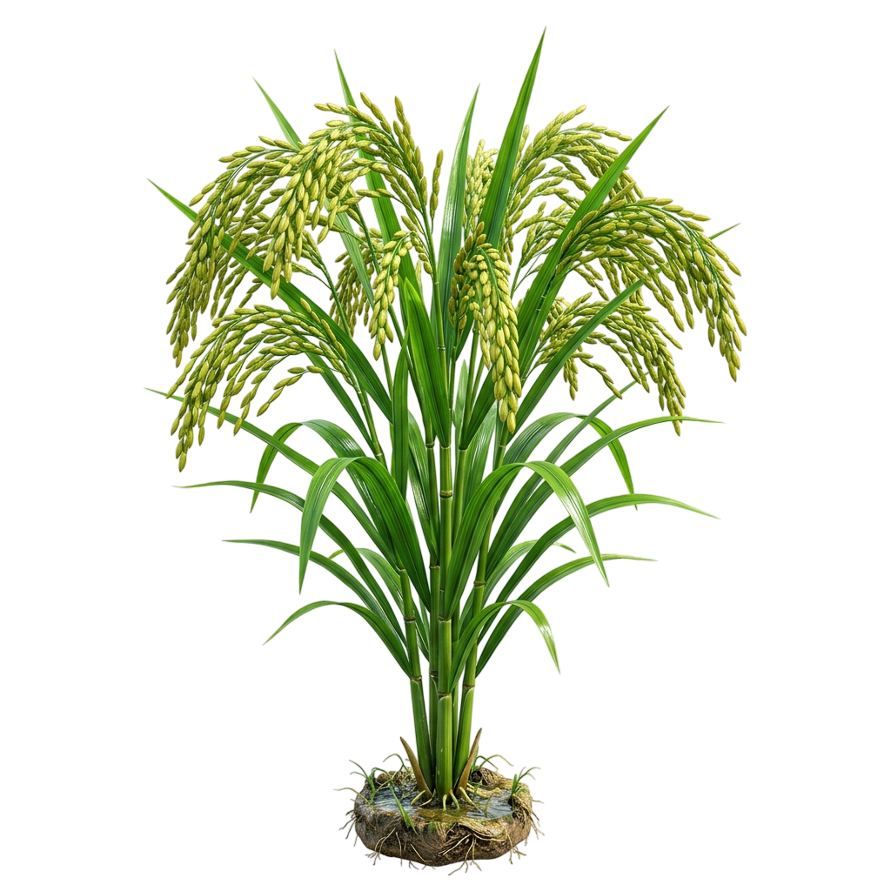

AGROSENSE
Smart Irrigation Monitoring System
Dashboard Real-time — Monitoring Sawah Tadah Hujan

STATUS SAWAH TADAH HUJAN
Kondisi:
MEMUAT...
Kelembaban Tanah:
45%
45%
Kelembaban tanah dalam kondisi optimal
CUACA SAAT INI
28°C
Suhu: 28°C
Kelembaban: 75%
Angin: 10 km/jam
|
Memuat...
STATUS ALAT IoT
Baterai:
85%
Sinyal:
Baik
Status Perangkat:
ONLINE
GRAFIK KELEMBABAN TANAH (7 Hari Terakhir)
Memuat...
-
-
Memuat...
-
-
Memuat...
-
-
Rekomendasi Berdasarkan Cuaca
Menganalisis cuaca...
ALERT & NOTIFIKASI
Alert-H1: Memuat data...
Harap tunggu sebentar.
LOG AKTIVITAS SISTEM
SISTEM memuat log aktivitas...
Sekarang